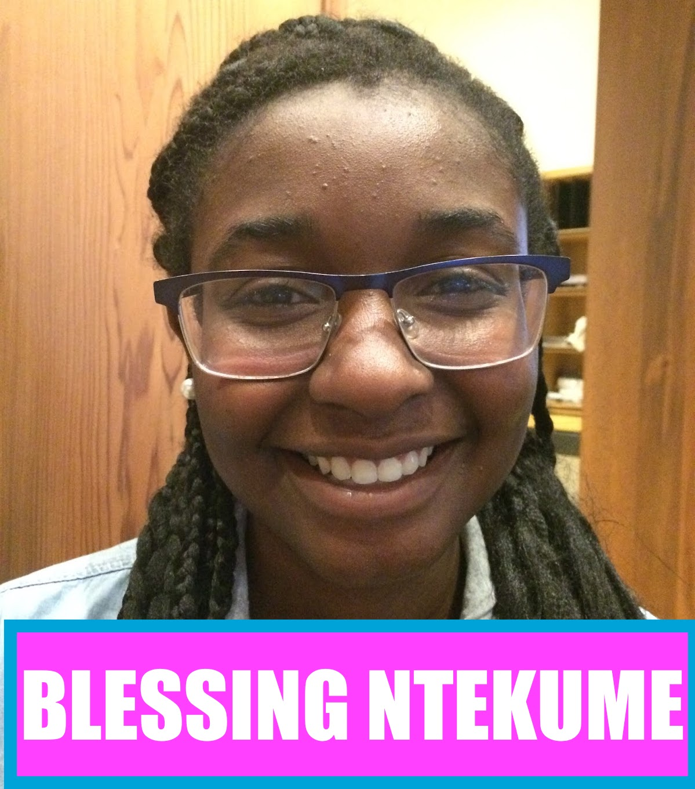
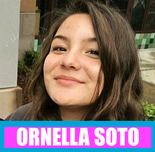
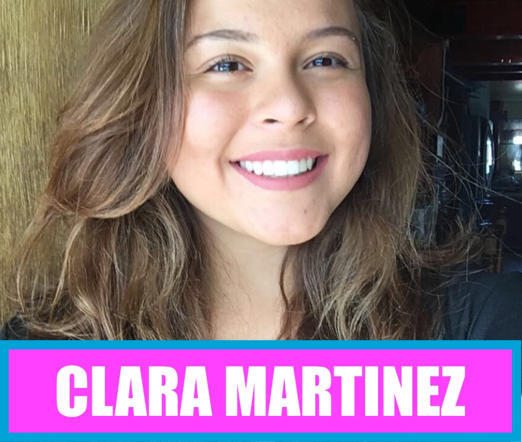
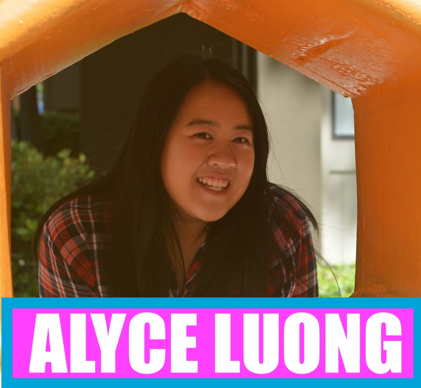
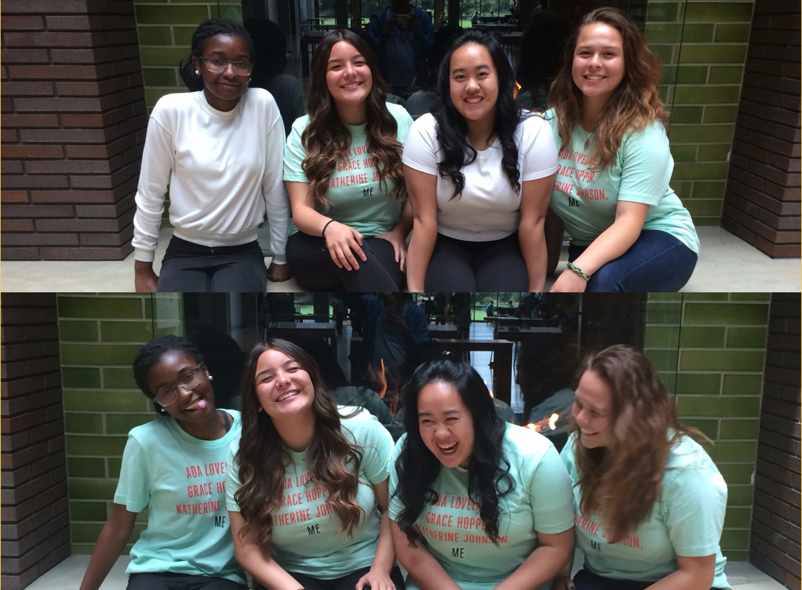

"HEALTH ADVOCATES PURSUING PROBLEMS YOU MENTALLY INQUIRE NIGHTLY & DAILY"
ABOUT US: Mental Health Advocates
What is Happy Mind?
Happy Mind is geared toward helping future generations accept and address mental health
as a concerning and pressing issue. Happy Mind stands for Health Advocates Pursuing Problems
You Mentally Inquire Nightly & Daily. Our website includes overall information and advice for users
and has interative elements as resources. One interactive element is "Pan!c Mode" which evaluates your current state and gives users ideas on how to cope
with panic attacks as well as how to prevent them in the future. We also offer "COBA" which is a global map that allows the user to input their desired zipcode and
gives back different mental help resources around: mental institutions, therapy, suicide hotline,etc. This application will help users pinpoint strategies to
cope with depression, anxiety and other mental health issues. Furthermore, helping you build the ability to combat mental
health in yourself as well as others around you.
 Who are We?
Who are We?

Blessing Ntekume is a 16 year old from Oakland, California. She is a rising junior at Berkeley High School, and plans to graduate high school in 2019. Blessing is very passionate about using the arts to tell a story, which has led her to pursuing hobbies such as writing poems, short stories, and sketching organic life. She also runs track and field and likes to play video games on occasion, both of which have taught her the value of teamwork and communication. During the Girls Who Code Summer Immersion Program in 2017, Blessing learned not only what it means to code and be a computer scientist, but also that pursuing your passion- (whether it be on the side, or as a career), is a key aspect of a happy, fulfilled life. She has used her skills learned through the GWC SIP to help create the Happy Minds, a website centered around mental health awareness and coping strategies for those struggling with a mental illness.

Ornella Soto is an upcoming senior at Alameda Community Learning Center and is a Chilean immigrant
that spent her time growing up in Oakland, California. She is fluent in both Spanish and English, and has been blessed
to communicate with both cultures. Her hobbies include various leadership activities, writing
pieces about her experiences, and ranting about the necessity of diversity inclusion. She believes that Girls Who
Code warrants the advancement of female inclusion in tech fields, and joined the Pixar host site without knowing
what to expect. As she joined the sisterhood, she was surprised to be welcomed and empowered by other girls. Ornella believes Happy Mind is a gateway for the extinction of false mental stigmas around different
mental illnesses, and helps users address and cope with their mental health. Ornella coded the layout and style of the
website, with the constructive advice of Blessing.

Clara Martinez is a rising junior at Arroyo High School who plays tennis, volleyball and swims. She enjoys playing guitar, ukulele, piano, cello and singing,doing jiu-jitsu and kickboxing, and surfs(at half moon bay). Clara's hobbies include, watching supernatural, listening to music, playing instruments with her sister, playing catch with her brother. She believes girls who code is a great way to empower women, as well as a great way to encourage coding.She thought of happy mind because she herself had/has anxiety/panic attacks and thought if she had something like this when she was having the attack she would have been less frantic and more aware of the way she was thinking. She thought she could make something accessible and tailored to be helpful for other people who don't have immediate access to their "safe space" and experience similar situations. Thus coming up with the idea of the "on-the-go" help which her and her team came up with happy mind, and pursued this as their final project for girls who code.

Alyce is an uprising senior at Oakland High School, and grew up in the Bay Area. She loves being at Girls Who Code at Pixar Animation
Studios because it is not just about coding, but being able to bond and work together with other girls at
the summer program. She loves playing video games, which makes her want to code her own game in the future,
so her major in the future is computer science and she hopes to learn a lot more about coding and different
languages in the future. Her thoughts on Happy Mind is that mental awareness is very important if you want
to prevent it from happening to the ones we love. She is very dedicated to helping those around her,
and believes Happy Mind is the key to the future for mental health awareness. Alyce also conducted a major portion of the research
about mental illnesses.
WE ARE GIRLS WHO CODE

Blessing, Ornella, Clara, and Alyce all attended Girls Who Code at the Pixar host site in Emeryville, California.
Although they all come from various different upbringings, they were all able to piece together their backgrounds to contribute to
Happy Mind. They worked briefly together while enduring the 7 week long summer immersion program, but ultimately worked together for
their Final Project. Similarly, they all had no previous experience coding anything, and learned everything on the spot. They decided
to channel in their strengths and interests into Happy Mind, and all contributed to every aspect of the project. A special thanks and
appreciation to PIXAR that happily welcomed and hosted all four of them, and Girls Who Code for granting them a once in a lifetime opportunity.